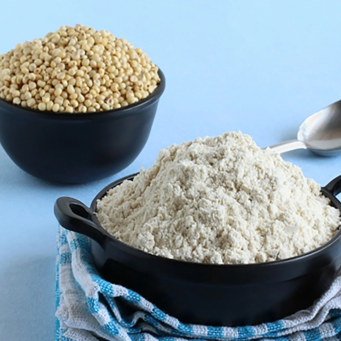
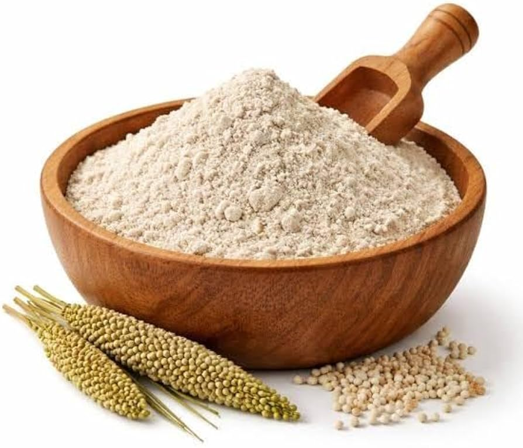
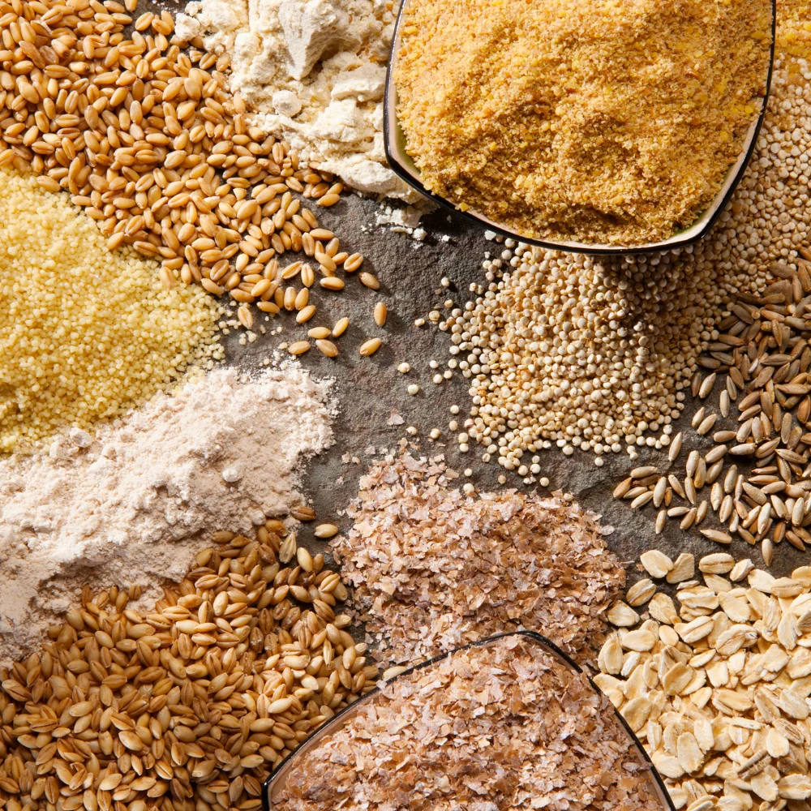

MP Sharbati Wheat
Single-origin Sehore golden wheat known for natural sweetness and feather-soft everyday phulkas.
2 kg / 5 kg / 10 kgFine / Medium
Single-origin Sharbati wheat, heirloom Khapli and native millets—slow-milled fresh to your chosen texture.
Browse Grains
Single-origin Sehore golden wheat known for natural sweetness and feather-soft everyday phulkas.

Ancient low-GI heirloom dicoccum wheat rich in dietary fibre with a nutty, wholesome aroma.

Naturally gluten-free white sorghum millet stone-milled fine for soft bhakris and rotis.

Iron-rich pearl millet freshly ground for earthy, warming winter rotlas and khichdi.

Balanced 7-grain blend of Sharbati wheat, ragi, jowar, oats, chana dal, soya and flaxseed.

100% pure chana dal cold-milled for fragrant kadhi, crispy batters, chillas and sweets.
The Miller's Texture Matrix
Different Indian breads and culinary traditions require specific flour particle geometry and hydration absorption. Select your custom stone calibration when placing your order.
Velvety smooth, ultra-aerated whole wheat flour that binds water rapidly for high dough stretchability.
Authentic traditional household grind. Keeps 100% of fibrous wheat germ flakes intact with wholesome bite.
Coarsely sheared whole grain kernels with full cellular integrity. Rich nutty chew for comfort porridge.
Unbleached golden outer pericarp flakes separated during gentle stone milling for gut-health fiber boost.